AI Academy · Level 4 · Grade 9 · Week 33 · Student lesson
Model Cards and Human Review
Learn to understand, design, build, test and explain AI systems responsibly.
Project: Responsible Plant Classifier
Before you start
Week 31: a single overall metric hides conditions and failure types.
Plan time to read, investigate and explain. Keep predictions separate from observations.
Student lesson · 1 of 14
Your mission
Your learning target
I can write a model card whose claims match evidence.
I can separate intended use from unsupported use.
I can review a card for missing evaluation details.
Remember before reading
Close your notes first. A rough first answer helps us choose the right starting point; it is not a score for your ability.
Without opening the old lesson, explain one key idea from Proxy Features and Fairness. Give an example and a mistake that the idea helps you avoid.
Without opening the old lesson, explain one key idea from Improve Generalization. Give an example and a mistake that the idea helps you avoid.
Without opening the old lesson, explain one key idea from Overfitting. Give an example and a mistake that the idea helps you avoid.
After trying, check the relevant lesson or ask your teacher. Change the part of your explanation that the evidence shows was wrong.
A model card defines intended use, evidence, limitations, risks, decision boundaries, monitoring, and human escalation.
Builder name and experiment date:
Readiness for the connected explanation
What should remain visible after an evaluation?
This week’s end goal
By the end, I can explain model cards and human review using a traced example and a stated limitation.
Student lesson · 2 of 14
Notice the evidence
PICTURE ENTRY
Notice → Predict → Explain
Begin with visible evidence; do not explain more than the picture and information support.
Name three visible details without interpreting them.
Predict the data, model, or evaluation decision being made.
Identify one hidden assumption that could change the result.
State what evidence would confirm or reject your prediction.
My prediction and supporting evidence:
A closer explanation
A model card helps another person understand what was built and what evidence exists. It is a record, not a certificate of safety. Link statements to saved data and run records. Use unknown or not evaluated where evidence is absent instead of filling gaps with optimistic language.
Use fictional classroom data throughout this investigation. Keep the task, units, reference labels and data split visible as you reason. Earlier weeks supplied the model-building process; this week examines model cards and review.
Student lesson · 3 of 14
See how it works
ML MECHANISM
Input → Model → Evidence
Trace the information, fitted behavior, and evaluation proof separately.
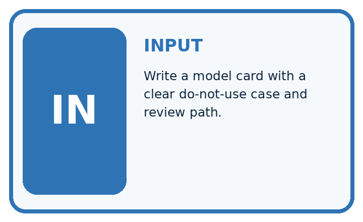
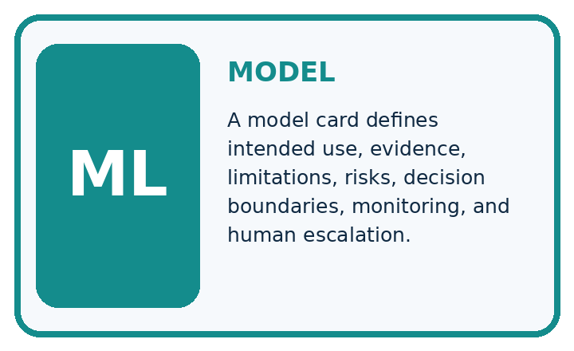
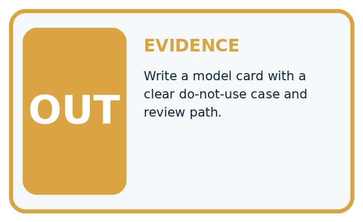
QUESTION Write a model card with a clear do-not-use case and review path.
MODEL IDEA A model card defines intended use, evidence, limitations, risks, decision boundaries, monitoring, and human escalation.
PROOF NEEDED Use an unseen case, visible calculation, error analysis, and a stated limitation.
Draw a fresh data → model → prediction → evaluation trace:
A closer explanation
Example card: classroom parcel classifier v 1; purpose: compare toy classification methods on fictional clear/blocked labels. Training 40, validation 20, test 12 with separate record groups. Frozen test TN 7 FP 1 FN 2 TP 2, blocked positive: accuracy 9/12, precision 2/3, recall 2/4. Always-clear baseline scores 8/12. No real parcel or student decision is supported.
Before continuing, underline the decision rule and circle the evidence that supports the conclusion. Explain the example to a partner without replacing the counts or conditions with a stronger claim. Keep the distinction between an observed result and a proposed next step.
Connect the picture and the explanation
Point to the input, the deciding step and the result in this week’s visual. Explain the same step in ordinary words. A picture helps when you can say what each part represents.
Student lesson · 4 of 14
Compare the cases
EVALUATION DESIGN
Four Tests, Four Kinds of Evidence
A system is not understood until it survives more than one comfortable example.


NORMAL Expected data and expected behavior.
BOUNDARY Value close to a threshold, ambiguous label, or uncertain prediction.
MISSING Necessary field, label, source, or measurement is unavailable.
SHIFTED New lighting, species, device, subgroup, or time condition.
Which case most threatens today's claim, and why?
Change one thing in the pictured case
Change: The publicity sentence becomes “80% accurate for every plant”.
Prediction: Reject that unbounded statement.
Reason: The measured rate belongs to twenty related indoor photos, not every plant or setting.
Student lesson · 5 of 14
Words that unlock the idea
VOCABULARY
Words You Can Calculate and Defend
A definition matters when it lets you interpret a new dataset, model, or result.
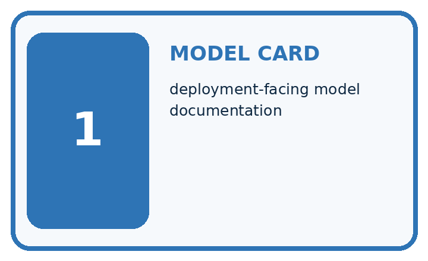
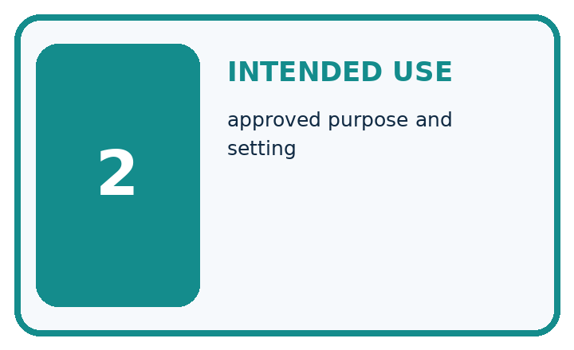
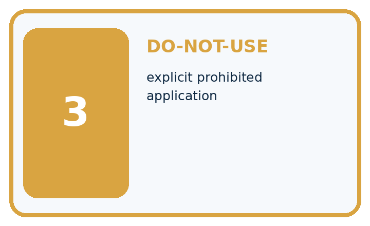
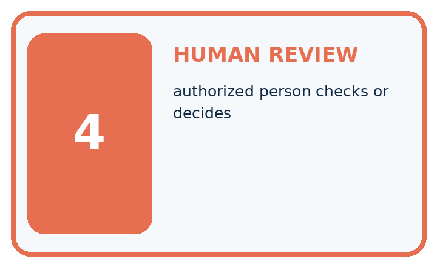
| Term | Precise meaning | My ML example |
|---|---|---|
| model card | deployment-facing model documentation | |
| intended use | approved purpose and setting | |
| do-not-use | explicit prohibited application | |
| human review | authorized person checks or decides |
Repair the claim using a definition, calculation, or test record:
Words used in the closer explanation
| Word | Meaning |
|---|---|
| Model card | A concise structured account of a model and its limits |
| Intended use | The purpose and conditions the evidence supports |
| Out-of-scope use | A purpose for which the model is not supported |
| Review status | The current state of checks and unresolved issues |
Student lesson · 6 of 14
Follow a worked example
WORKED EVIDENCE
Reason Step by Step
Predict first. Then check each step. A correct answer without visible evidence cannot be audited.
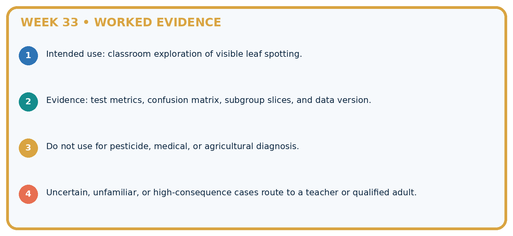
STEP 1 Intended use: classroom exploration of visible leaf spotting.
STEP 2 Evidence: test metrics, confusion matrix, subgroup slices, and data version.
STEP 3 Do not use for pesticide, medical, or agricultural diagnosis.
STEP 4 Uncertain, unfamiliar, or high-consequence cases route to a teacher or qualified adult.
Recalculate, retrace, or restate the evidence independently:
A closer explanation
Model cards and review at a glance
Learn from the worked case
Cover the result before checking it. Say what is given, choose the procedure, and follow one step at a time. Then uncover the result and explain your first mismatch. Ask why a step is allowed, not only what number it produces.
A pictorial worked case: Model Cards and Human Review
Write a model card whose performance statement can be traced to a concrete evaluation.
The facts we will use
Toy v = 3 classifier scored16/20 on five unseen plants with four views each, under indoor tablet lighting. Baseline scored14/20.
All inputs and outcomes in this worked example are invented classroom data; no real model run is claimed.
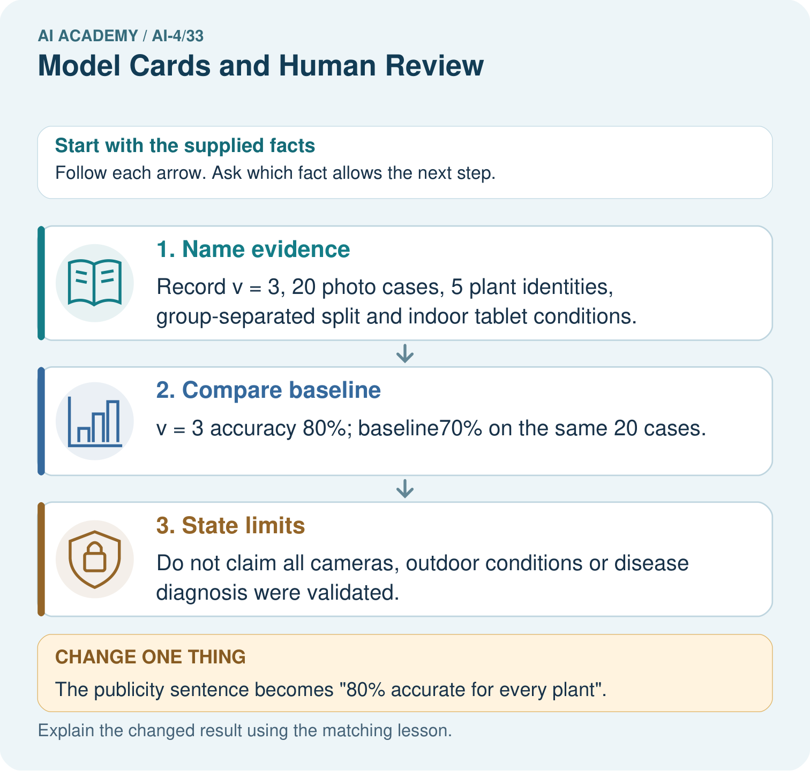
Read the picture one step at a time
Why this result follows
Read the picture in order. Do not claim all cameras, outdoor conditions or disease diagnosis were validated. The arrows show which recorded input or intermediate result each decision uses. Explain the deciding step aloud before checking the changed case; pointing to the final answer alone does not show how it follows.
What this example does not establish
A model card communicates evidence; it is not certification of safety, fairness or suitability for consequential plant decisions.
Student lesson · 7 of 14
Find and repair a mistake
ERROR DETECTIVE
Compare → Diagnose → Repair
Do not patch the answer. Find the earliest unsupported assumption, data problem, or experiment error.
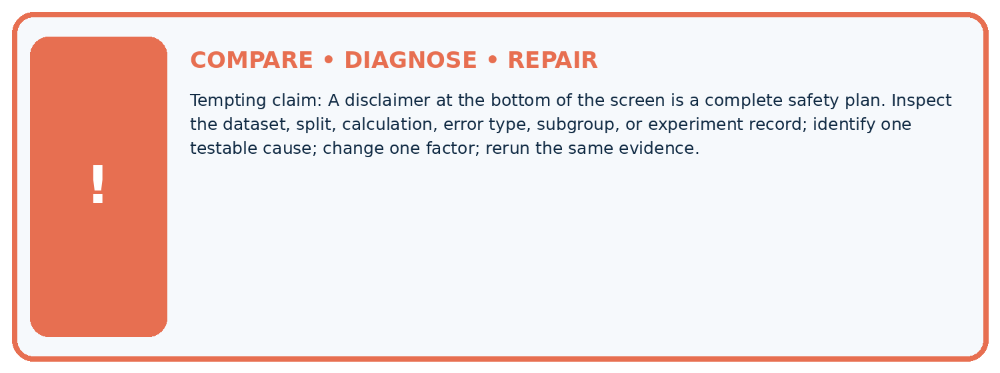
| Evidence record | Expected | Actual | Likely cause / next test |
|---|---|---|---|
| normal case | passes | ||
| boundary case | defined behavior | ||
| missing case | safe fallback | ||
| shifted case | measured limit |
Diagnose one cause and name the cleanest next experiment:
A closer explanation
Do not claim a synthetic classroom dataset represents every school or age group. Missing calibration, subgroup or shift evidence must remain explicit. A useful card may conclude that the model should stay a classroom demonstration.
Student lesson · 8 of 14
Practise together
ML STUDIO
Specify Before You Run
A trustworthy result can be reproduced from the recorded data, code, settings, and evaluation rule.

Experiment record
QUESTION + intended use + success threshold
DATA version + grouped split + leakage check
CODE/preprocessing + features + model + settings + seed
METRICS + positive class + units + denominators
PREDICTIONS + errors + subgroup slices + limitations
HUMAN reviewer + release, revise, limit, or stop decision
Write the minimum record needed to reproduce today's result:
A closer explanation
A peer reviewer traces one headline number back to the saved predictions, checks denominators and looks for mismatches between intended use and evidence. Record requested changes and whether each was resolved. A card must be updated when its model, data or intended use changes.
Practise with less help: Check arithmetic
Use workbook W2 for the connected example “Model cards and review”. First fill the input and rule boxes. Try the middle steps before asking for a hint. After a hint, try the next step yourself.
| Plan | Do | Check |
|---|---|---|
| What is given? Which rule or procedure applies? | Record each intermediate step. | Does the result follow? What remains unknown? |
Explain your trace to a partner. Your partner points to one step to check. Swap roles on the next case. Each person writes their own explanation.
Check your reasoning
Use the worked case for Model cards and review. Proposed explanation: “A final answer is enough”. Decide whether this explanation is supported. Point to the step or supplied fact that decides; explain your repair if needed.
Answer on your own before discussion. If you are unsure, say which step you need help with.
Explain the picture
Write a bounded replacement for the publicity sentence. Point to the relevant step in the picture, then write the changed result and the rule or evidence that supports it.
This is supported practice. Keep the separately named independent case for an attempt before feedback.
Student lesson · 9 of 14
Run the investigation
EVIDENCE LAB
Predict → Run → Calculate → Interpret
Keep the test conditions fixed, record every result, and change only one planned factor.
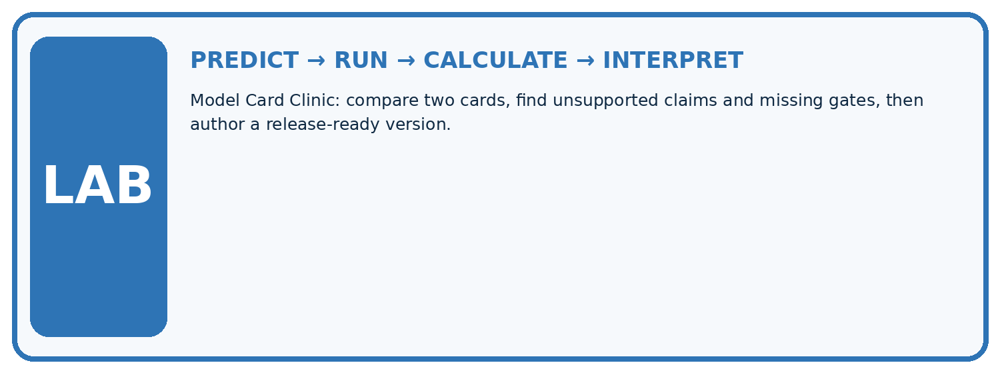
1. Write the hypothesis and expected evidence before running.
2. Model Card Clinic: compare two cards, find unsupported claims and missing gates, then author a release-ready version.
3. Run one normal, one boundary, one missing, and one shifted case.
4. Calculate the metric from raw counts or row-level errors.
5. Interpret what changed, what did not, and what remains unsafe or unknown.
| Case | Prediction | Actual | Calculation / evidence | Meaning / next test |
|---|---|---|---|---|
| Normal | ||||
| Boundary | ||||
| Missing | ||||
| Shifted |
Plan → try → check
Before trying: what do I expect, and why? While trying: which step could first go wrong? Afterwards: what did I actually observe, and what should change? Keep “not run” if you only traced the procedure.
Student lesson · 10 of 14
Build your understanding
MASTERY
From Knowing the Word to Owning the Idea
Move upward only when you can produce evidence without copying the example.

DEFINE Use all four terms precisely: model card, intended use, do-not-use, human review.
CALCULATE Reproduce the worked evidence with units and denominator.
TRACE Explain the data, code or decision path.
DIAGNOSE A disclaimer at the bottom of the screen is a complete safety plan.
TRANSFER Solve a fresh dataset or model case.
IMPROVE Change one cause and rerun fixed evidence.
DEFEND State intended use, metric, limitation, and human responsibility.
Student lesson · 11 of 14
Connect your project
CUMULATIVE PROJECT
Responsible Plant Classifier
Every week adds one reviewable artifact to the same evidence-based capstone.
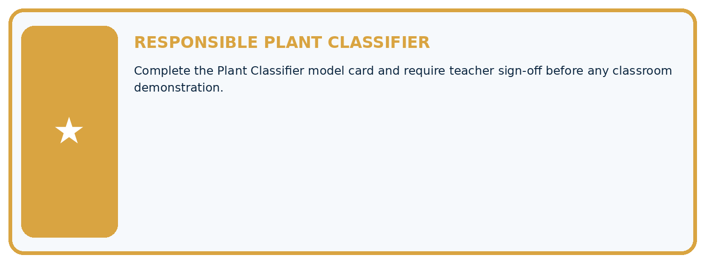
Which requirement or risk does this artifact address?
Which dataset, split, code, and metric version does it use?
What normal and shifted cases were tested?
What remains uncertain or weak?
What decision still belongs to a teacher or qualified human?
My evidence-linked project decision:
Evidence for your project
For your Responsible Plant Classifier, save the input, procedure, observed result and limitation of this check. Label this worked example as practice; use a different, previously unreviewed case when checking independent understanding.
Student lesson · 12 of 14
Show what you know
INDEPENDENT PROOF
Explain • Calculate • Transfer • Defend
Complete this with a fresh case after guided practice and compare it with the mastery criteria.
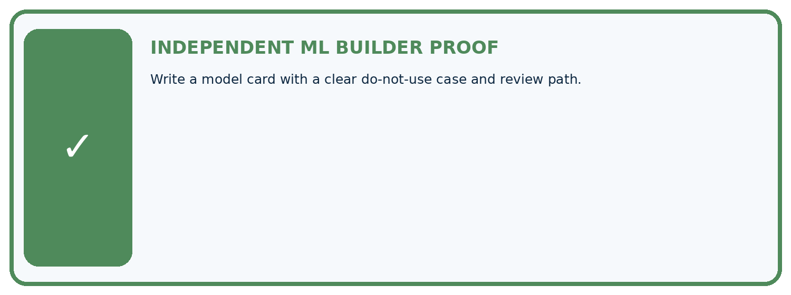
□ Define the task, feature/target roles, and intended-use boundary.
□ Show the calculation, code trace, or experiment record.
□ Test a normal case and one revealing boundary, missing, or shifted case.
□ Diagnose one failure without changing several factors at once.
□ Name a limitation, fairness concern, and the human-review action.
Independent evidence and defense:
My level: □ Not yet □ With one hint □ Independently □ I can teach and defend it
Student lesson · 13 of 14
Study a complete case
Week 33 Worked case
Use the supplied details to practise the weekly concept before attempting the independent question. This case extends the illustrated lesson.
The situation
A model card says healthy/spotted,80% accuracy only.
The question
Add responsible-use evidence.
Worked explanation
Intended users/conditions, labels/data, evaluation sets/metrics, class/subgroup results, versions, limitations, excluded uses and human review. Classroom classification is not professional diagnosis.
Explain it in your own words
Which detail supports the answer, and why does it matter?
Trace the supplied case visually
A model card supports responsible review
| Evidence or stage | Value or result |
|---|---|
| Purpose | Users, conditions and excluded uses |
| Evidence | Data, labels, metrics and subgroup results |
| Version | System and evaluation identity |
| Limits | Failure conditions and human review |
A model card says healthy/spotted,80% accuracy only.
Add responsible-use evidence.
Intended users/conditions, labels/data, evaluation sets/metrics, class/subgroup results, versions, limitations, excluded uses and human review. Classroom classification is not professional diagnosis.
Student lesson · 14 of 14
Try a new case independently
Independent case: Apply independently
Review this card: model v 2, 90 percent accurate, works for every school. No dataset size, split or baseline is given. Write a correction request with a bounded replacement claim.
Attempt this case before feedback. Record any help. Earlier examples below are further practice; a case already practised with feedback cannot establish fresh transfer.
Week 33 Independent application
Close the worked explanation. Apply the idea to this different question without copying.
A model card says 90% accuracy but gives no intended use, data conditions or human-review rule. What should be added before classroom use?
My answer, with a trace, calculation or supporting evidence
Create and test
Change one relevant detail. Predict the result before testing. Include a boundary or missing-information case when it helps reveal a limit.
My changed input and expected result
Connect to your project
Complete the Plant Classifier model card and require teacher sign-off before any classroom demonstration.
The evidence I will keep
Your teacher has the independent answer and scoring criteria. Complete the matching workbook week to keep your practice evidence together.
Transfer practice from the original programme
Draft five model-card headings for a classroom leaf classifier. Why must the card state that its labels are classroom categories rather than professional plant diagnosis?
Use feedback to improve
Attempt the independent case before hints. Record whether you worked alone, used a hint or followed a model. After feedback, fix the first unsupported step and explain why it changed. A later check uses a changed case, not a copied answer.